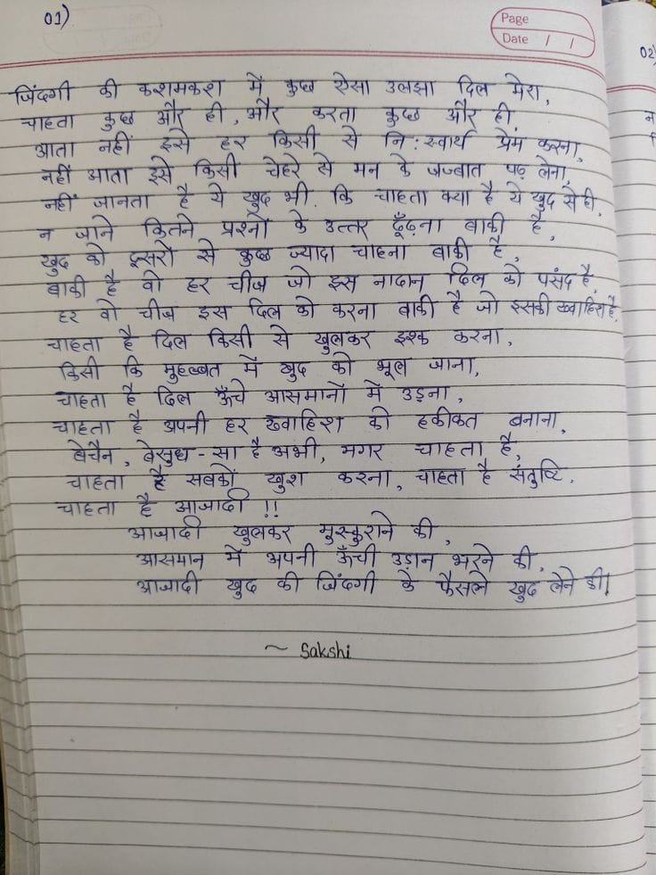

File: hin_sample_02.jpg

बिंदुमाली की कहानी में कुछ ऐसा उबला दिल मेरा, जानता हुआ आँग ती, और करता कुछ आँग ही। भाता नहीं होते हैं कि किसी से मीर: साध्य योग करना, जिसे बाता सी सिस्स से उठ लेते मन के जवाब पूछ लेना, नहीं जानता है ये कैसा भी बि जानता क्या है ये कुछ से ही, ज जाने विद्रत ग्रनों वे उत्तर दूंगा बाकी है, सुख के दस्तरो से उख़ा खयाद कहना बाकी है, बाकी है वो नेस जीब को इस बातन तेल को पंड़ रहे, रे वो जीब इस दिल के करना बाकी है जो रहती नहीं हो, जानता है दिल किसी से सुक्षर कुछ करना, किसी के मुखबंट में सुख को भूल आना, जानता है दिल कुछ असमानों में ऊँजना, जानता है आपनी एर कीमत की हाकत करना, बरीन, बेखुब-सा है बहु, मार जानता है, जानता है सबका बुधा करना, जानता है सुधी, जानता है आंको !! आमादी सुख कर मुखरुणों की, आसामन में अपनी आने उठान बुरने की, आमादी सुख की बिंदुगी दे बहरने सुख ले रहे।
ज़िंदगी की कशमकश में कुछ ऐसा उलझा दिल मेरा, चाहता कुछ और ही, और करता कुछ और ही. आता नहीं इसे हर किसी से निःस्वार्थ प्रेम करना, नहीं आता इसे किसी चेहरे से मन के जज्बात पढ़ लेना, नहीं जानता है ये खुद भी. कि चाहता क्या है ये खुद से ही. न जाने कितने प्रश्नों के उत्तर ढूँढ़ना बाकी है, खुद को दूसरों से कुछ ज्यादा चाहना बाकी है. बाकी है वो हर चीज जो इस नादान दिल को पसंद है, हर वो चीज इस दिल को करना बाकी है जो इसकी ख्वाहिश है. चाहता है दिल किसी से खुलकर इश्क करना, किसी कि मुहब्बत में खुद को भूल जाना, चाहता है दिल ऊँचे आसमानों में उड़ना, चाहता है अपनी हर ख्वाहिश की हकीकत बनाना, बेचैन, बेसुध-सा है अभी, मगर चाहता है, चाहता है सबको खुश करना, चाहता है संतुष्टि. चाहता है आज़ादी !! आज़ादी खुलकर मुस्कुराने की, आसमान में अपनी ऊँची उड़ान भरने की, आज़ादी खुद की जिंदगी के फैसले खुद लेने की! ~ Sakshi
01) Page Date / / 02 जिंदगी की करामकश में कुछ ऐसा उलझा दिल मेरा, चाहता कुछ और ही, और करता कुछ और ही. आता नहीं इसे हर किसी से निःस्वार्थ प्रेम करना, नहीं आता इसे किसी चेहरे से मन के अज्बात पढ़ लेना, नहीं जानता है ये खुद भी कि चाहता क्या है ये खुद से ही, न जाने कितने प्रश्नों के उत्तर ढूँढ़ना बाकी है, खुद को दूसरों से कुछ ज्यादा चाहना बाकी है, बाकी है वो हर चीज जो इस नादान दिल को पसंद है, हर वो चीज इस दिल को करना बाकी है जो उसकी ख्वाहिश है, चाहता है दिल किसी से खुलकर इश्क करना, किसी कि मुहब्बत में बुद को भूल जाना, चाहता है दिल ऊँचे आसमानों में उड़ना, चाहता है अपनी हर ख्वाहिश की हकीकत बनाना, बेचैन, बेसुध-सा है अभी, मगर चाहता है, चाहता है सबको खुश करना, चाहता है संतुष्टि, चाहता है आजादी !! आजादी खुलकर मुस्कुराने की, आसमान में अपनी ऊँची उड़ान भरने की, आजादी खुद की जिंदगी के फैसले खुद लेने की ~ Sakshi
० if ‘Ee SSS an eiastt की कशमकरा में कुछ Say sory दिल मेरा — es द a Sih Ay : yar ae Sie _-नहीं भाता ay किसी चेहरे से मन के जज्बात पछ Bay eee, sat बादी - हि oe 3 ag SRY से कुछ ज्यादा चाहना वाशी टेप = ¥ Sh है वो डर चीज़ ont ey नाठना छिल छे पर्संद हे. -- ahi इस er झो करना वादी है मो झसडी eat —4 Sper ae को मल TS —=eq है Ra आसमानों में ea, 7 “चाहता है अपनी हर ख्वाहिश छो eS AT, aq ages eR चाहता हैं. “चाहता Sa खुश RAT aT ia f Ss जय तर जमा eins eee UR eet. a जि 4
Sect ee गे अब ae fee = eat ge IO ge NN मर ता le eee aor air किंसीः ee aT ee eg पक ae को :छसरों उसमे कुछ SN ee a ee 7 एक लक-- चाह बनी a प- Baler) S808 कानों Se सब ene ae सन SOE RUS SIRT EN Shag Se T. dédl x. से cok ar Se, ae है दक्थि। | ४». 2 =a eS 72) aya ~ 7 iar बार ane Oe Se eee ) $a के अपनी Sete Se on als at SACI DY- eS "BREE ye te 5०:22 i ag St setter rept 7 WLLL ge Sets फसल ae er st i ee eee फेसले ae ले डे fae खुद oe SEE WL ae eee a a eee “हक Se . on . * =
01 Page Daie रेसा जिँदगी दिल उलझा चeता आता मन आता चाहता जानता उत्तर ५७ना प्रश्न चाहना ज्यादा फल नादान चीब करना ढिसी से दै दिलन इश्झ खुलठर डिसी चाना मुरब्बत क आसमानों मॅ दिल उडना ढकीकत वनाना डपनी ख्वाहिर ह ६२ है अभी बेचैन चाहता मगर बसुध खूश करना चाह्ता आजाद खुलकर अपनी आसमान चिँदगी आच्यादी Sakshi
❌ OCR Failed
ऋषित्व।
ज्ये भिषु पयाहि शेर जिंद्गी ठी कुश्शमकुर मेँ कुष् रेखा उजझा दित मेदा चाहबा। कुश गंंर ही औऱ बुरता कुष्छ आऱ ४ि ही आता नहीं हुर किखी से निःख्वार्थ प्रेम ख़ता नहीं आता इसे फिसी चिह्ड् बे मन दे श्रजबाति घड़ू जिना नहीँ जाजन। है-थे खूर भी थि चाहिता क्या हैथे जूनि डिनने प्रश्नों फे अत्तर ढूड़ना बारी ई खुद शी इन-खर कुष्ब ज्यादा चोहिना बाड़ी बाढ़़ी ह्व वी हर चीज जो कुस न्पिण् ढिबू बॉ पूसंद हर वो चीज इःख दित्म छो कुरना बाकी है जो ससछी बब्वाहिवरट्टे चाठता है दित्न दिखी से खुजिक थी ३्शघ केरत्रो दिखी कि मुघ्ष्बत न बुष छो भूब आना चाहिता है ढित ऊँचे श्रार्म्ानां मेँ उड़ज चाहदा है अपनी हर खुवाहिश ठी हकीठत बनाना इभ धेचेन चेहवे। चह्हिना ई भ कगार चणाईडइ है इेड्ट्युद्धरेसु्री १ ९ खबको घुश कुरना चाहित्ा है संतुष्ि आनजाज ई अताजाद। खुबवूर मुरकशान दी श्ञा-ख़नमाज मे अपूनी ऊँची डंशन टैने नध आजादी घुष की जिंद्णी गुँ केखद्िन पुद श्रेश्र डी नेऊ रिणिशबीय
थे ० जिंदगी की करमकश ओ। टी घीओ। मौ। ग कुप् रोा उलमा गौटी मोट दिल मेर चावा कुप् रो ए किजी कुरता म निस्वार्थ कुप्व त पगं कुा आता आता जठीं रे किती चेे रे मन प जज्बात प लवा नहीं नरें जानेता गं प खुषभी षूब भी ति वि चाष्ता व्धा मे येद मेवी नजाने जाते पुसों रितने रे पश्नो कु् ज्यादा उेउत्ल ग उत्लट चोटला जूँज्ना बाक़ी बापी क ग खुे खुब क ग वो ० चीज जो क नादान पिलें गील ग पंसंप पं ग शावी घवे तर व चीज उ पितवें विल ग कुरना बाढ़ी रैजो ससगीबबािताते सनव गोजातव चात्ता ग किब मुषब्बत विसी रं रे थुप खुतक् फो भूत्व झश्व जाना ठुरना चात्ता गिसो वि रं विल ऊँचे आसमानाों ग उडना गहता ग अपनी ४न खबाहिश क ककीकत बनाना पेचैन बेखुध-सा बेखुध म रअभी र अभी मरार चात्ता चा्ता क कसंतुषि ट संतुष्टि चाटता चात्ता ग ग आजादी सबकों चुश ऋुरना आजादी खुबफर मुसुराने क आजादी आसमान ग बूब अपनी फ जिंबेगी ऊँधी उगन ग फैतले भने खुंदलेनेडी। खुढ क तेने।